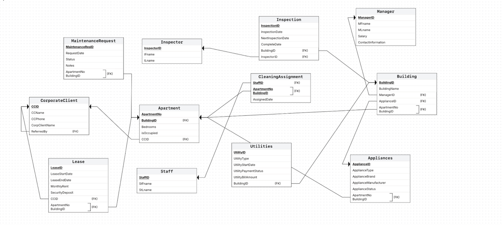

Visual Documentation
Complete database design documentation including ER diagrams, schema diagrams, and query examples:
Entity-Relationship Diagram

Complete ER diagram showing all entities, attributes, and relationships in the property management system
Database Schema

Normalized database schema (3NF) with primary keys, foreign keys, and referential integrity constraints
SQL Query Example: Inspector Performance Tracking

Complex SQL query using INNER JOINs, date functions, and multi-table operations to track inspector performance